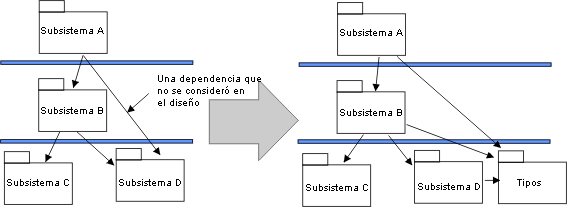

|
Establecer la estructura del modelo de implementación
|
Objetivo
|
Establecer la estructura del modelo de implementación.
|
Al cambiar del 'espacio de diseño' al 'espacio de implementación', empiece por duplicar la estructura del modelo de
diseño en el modelo de implementación.
Los paquetes de diseño tendrán sus correspondientes subsistemas de implementación, que contendrán uno o varios
directorios y archivos (Artefacto: Elemento de implementación) que se necesitan para implementar los elementos de
diseño correspondientes. La correlación del modelo de diseño al modelo de implementación puede cambiar, ya que cada
subsistema de implementación se asigna a una capa específica en la arquitectura.
Cree un diagrama que represente la estructura del modelo de implementación (consulte Directrices: Diagrama de
implementación).
|
Ajustar los subsistemas de implementación
|
Objetivo
|
Adaptar la estructura del modelo para que refleje las restricciones del lenguaje de implementación o la
organización del equipo.
|
Decida si se debe modificar la organización de los subsistemas. Para ello, solucione pequeños problemas tácticos
relacionados con el entorno de implementación. A continuación, se proporcionan algunos ejemplos de este tipo de
problemas tácticos. Tenga en cuenta que si decide cambiar la organización de los subsistemas de implementación, también
debe decidir si desea volver atrás y actualizar el modelo de diseño, o si prefiere que el modelo de diseño sea distinto
del modelo de implementación.
-
Organización del equipo de desarrollo. La estructura del subsistema debe permitir que varios implementadores
o equipos de implementadores continúen en paralelo sin demasiado solapamiento ni perturbaciones. Se recomienda que
cada subsistema de implementación sea responsabilidad de un único equipo. Esto significa que puede dividir un
subsistema en dos (si es grande) y asignar las dos partes a dos implementadores o dos equipos de
implementadores, en concreto si los dos implementadores (o equipos) tienen ciclos de compilación/release
diferentes).
-
Declaraciones de tipos. Durante la implementación, puede darse cuenta de que un subsistema necesita importar
productos de trabajo de otro subsistema, porque un tipo esté declarado en ese subsistema. Normalmente, esto ocurre
cuando utiliza lenguajes de programación escritos como, por ejemplo, C++, Java y Ada. En este caso, y en general,
se recomienda extraer las declaraciones de tipos en un subsistema aparte.
Ejemplo
Supongamos que extrae algunas declaraciones de tipo del Subsistema D en un nuevo subsistema Tipos, para que el
Subsistema A sea independiente de los cambios en los productos de trabajo públicos (visibles) en el
Subsistema D.

Las declaraciones de tipos se extraen del Subsistema D
.
-
Código heredado y sistemas de componentes existentes. Puede que tenga que incorporar código heredado, una
biblioteca de componentes reutilizables o productos asequibles. Si no tienen un diseño modelado, se deben añadir
subsistemas de implementación.
-
Ajustar dependencias. Supongamos que un subsistema A y un subsistema B tienen dependencias de importación
entre ellos. No obstante, desea que B sea menos dependiente de los cambios en el subsistema A. Extraiga los
productos de trabajo de A que importa B y coloque un nuevo subsistema de implementación A1 en una capa inferior.

Los productos de trabajo se extraen del subsistema A y se colocan en un nuevo subsistema A1.
Ahora que los subsistemas de implementación ya no tienen una correlación unívoca con paquetes/subsistemas en el modelo
de diseño, puede realizar el cambio correspondiente en el modelo de diseño (si ha decidido mantener el modelo de diseño
estrechamente alineado con el modelo de implementación) o realizar un seguimiento de la correlación entre los modelos
de implementación y diseño (por ejemplo, mediante dependencias de rastreabilidad o realización). Si se debe realizar
este tipo de correlación y cómo hacerlo es una decisión de proceso que se debe especificar en el Producto de trabajo: Directrices específicas del proyecto.
|
Definir importaciones para cada subsistema de implementación
|
Objetivo
|
Definir dependencias entre subsistemas.
|
Para cada subsistema, defina qué otros subsistemas importa. Esto se puede hacer para conjuntos completos de
subsistemas, lo que permite que todos los subsistemas de una capa importen todos los subsistemas de una capa inferior.
Generalmente, las dependencias del modelo de implementación duplicarán aquellas del modelo de diseño, excepto donde se
haya ajustado la estructura del modelo de implementación (consulte Ajustar subsistemas
de implementación).
Presente la estructura en capas de los subsistemas en diagramas de componentes.
|
Decidir cómo tratar los programas ejecutables (y otros objetos derivados)
|
Los ejecutables (y otros objetos derivados) son el resultado de aplicar un proceso de compilación a un subsistema (o
varios subsistemas) de implementación o una parte del mismo, por lo que lógicamente pertenecen al subsistema de
implementación. No obstante, el arquitecto de software, en colaboración con el gestor de configuración, deberá decidir
la estructura de elementos de configuración que se va a aplicar al modelo de implementación.
Para facilitar la selección y la referencia, en concreto para el despliegue, la recomendación por omisión es definir
elementos de configuración aparte que contengan los conjuntos de programas ejecutables que se pueden desplegar (qué
programas ejecutables se despliegan en qué nodos se describe en el Modelo
de despliegue). Por lo tanto, en el caso más simple, para cada subsistema de implementación habrá un elemento de
configuración para los programas ejecutables desplegables y un elemento de configuración que contenga el origen, etc.,
que se utiliza para producirlos. El subsistema de implementación se puede considerar que está representado por un
elemento de configuración compuesto que contiene estos elementos de configuración (y quizás otros como, por ejemplo,
activos de prueba).
Desde el punto de vista del modelado, una colección de programas ejecutables producidos por un proceso de compilación
se puede representar como un Producto de trabajo: Compilación (que es un paquete) contenido en el
subsistema de implementación asociado (que también es un paquete).
|
Decidir cómo tratar los activos de prueba
|
Objetivo
|
Añadir productos de trabajo de prueba al modelo de implementación.
|
En general, los productos de trabajo de prueba y los subsistemas de prueba no se tratan de forma muy diferente de otro
software desarrollado en Rational Unified Process. No obstante, los productos de trabajo y los subsistemas de prueba
normalmente no forman parte del sistema desplegado, y a menudo no se pueden entregar al cliente. Por lo tanto, la
recomendación por omisión es alinear los activos de prueba con el destino de prueba (p.ej., elemento de implementación
de la prueba de unidad, sistema de implementación de la prueba de integración, sistema de prueba de sistema), pero
mantener los activos de prueba en directorios de prueba aparte, por ejemplo, si el depósito del proyecto está
organizado como un conjunto o jerarquía de directorios. Los distintos subsistemas de prueba (indicados para pruebas por
encima del nivel de prueba de unidad) se deben tratar de la misma forma que otros subsistemas de implementación: como
elementos de configuración diferentes.
Para el modelado, una colección de productos de trabajo de prueba se puede representar como un Producto de trabajo: Subsistema de implementación (un paquete). Para
la prueba de unidad, este tipo de subsistema de prueba estará contenido normalmente en el subsistema de implementación
asociado (probado). El arquitecto de software, en colaboración con el gestor de configuración, debe decidir si los
productos de trabajo de prueba de este nivel se deben configurar conjuntamente con los elementos de implementación que
prueban, o como elementos de configuración aparte. Para la prueba de sistema e integración, los subsistemas de prueba
pueden ser iguales de los subsistemas de implementación que se están probando.
|
Actualizar la vista de implementación
|
Objetivo
|
Actualizar la vista de implementación del documento de arquitectura de software.
|
La vista de implementación se describe en el Documento de arquitectura de software. Este apartado contiene
diagramas de componentes que muestran las capas y la asignación de subsistemas de implementación a las capas, así como
las dependencias de importación entre los subsistemas.
|
Evaluar el modelo de implementación
|